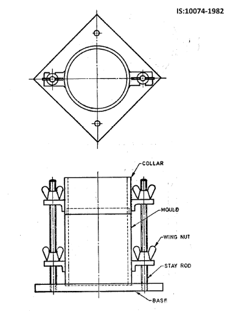
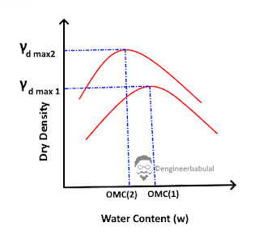

There is a definite relationship betweeen the moisture content and the dry density of the soil. The moisture content at which a soil reaches the maximum value of dry density is called Omptimal Mositure Content or OMC.
To calculate the value of OMC and corresponding value of Dry Density, a test was developed by Ralph R. Proctor in 1933, known as Proctor Test.
There are two types of Proctor Test as given in the table below along with the other details:
| Standard Proctor Test | Modified Proctor Test | |
|---|---|---|
| Weight of the Hammer | 2.494 Kg or 5.5 lb | 4.54 kg or 10 lb |
| Height of Fall | 304.8 mm or 12" | 457.2 mm or 18" |
| Volume of Mould | 944 cc or (1/30 cft) | 944 cc |
| Layers | 3 | 5 |
| Blows per Layer | 25 | 25 |
The proctor test was modified for Indian conditions and they are as follows:
| Light compaction Test | Heavy Compaction Test | |
|---|---|---|
| Weight of the Hammer | 2.60 Kg | 4.90 Kg |
| Height of Fall | 310 mm | 450 mm |
| Volume of Mould | 1000 cc | 1000 cc |
| Layers | 3 | 5 |
| Blows per Layer | 25 | 25 |
This test is performed as per IS:2720, Part - 7
Procedure:
1.A 5 Kg air dry sample of soil passing through 20 mm IS sieve is taken and thoroughly mixed with suitable amount of water depending upon the type of soil (4 to 6 % for sandy and gravely soils and 8 to 10 % below the plastic limit for cohesive soil). Note: The removal of small amounts of stone ( up to 5 percent) retained on 20-mm IS Sieve will affect the density obtainable only by amounts comparable with the experimental error involved in measuring the maximum dry density. The exclusion or a large proportion of stone coarse than 20 mm may have a major effect on the density obtained compared with that obtainable with the soil as a whole, and on the optimum moisture content. There is at present no generally accepted method of test or of calculation for dealing with this difficulty in comparing laboratory compaction test results with densities obtained in the field. For soils containing larger proportions of gravel, the use of a bigger mould (2250 ml) will avoid major errors.
2.The Mould (Conforming to IS:10074-1982) with base plate attached is weighed to 1 gm (m1)
3.Place the Mould on a solid base such as a concrete base, with the extension attached and fill the mould in 3 Layers , approximately of equal mass and compact each layer by giving it 25 nos of blows with a 2.6 Kg Hammer by dropping it from a height of 310 mm above the soil sample.
4.Remove the extension and level off the soil and weigh the mouth with the soil to 1 gm (m2)
5.Remove the compacted soil from the mould and determine its water content.
6.Broke the remaining soil specimen and pass it through the 20 mm IS sieve and mix it with the original soil sample. Add suitable amount of water, greater than what was added previously, and repeat the whole procedure as described above for atleast 5 times. The range of moisture content should be such that the optimum moisture content (OMC) at which Maximum dry density occurs, is within that range.
Note:
If the soil is susceptible to crushing during the compaction, five or more air dried sample with weight 2.5 Kg passing through 20 mm IS sieve is taken and each sample is mixd with different amount of water and follow the procedure as described above.
If the soil contains coarse material of size upto 40 mm, the 2250 cc mould is used and 6 Kg sample passing through 40 mm IS sieve is used to perform the test with 3 numbers of layer and each layer given 55 numbers of blows from 2.6 Kg hammer.
Calculation of Bulk and Dry Density:
Bulk density in g/cc can be calculated from the following relation:
γm=m2−m1Vm
And dry density can be calcuated from the following relation:
γd=100×γd100+w
Where, w= moisture content of soil in percent.
The dry densities determined from the above calculations is plotted against the corresponding water content of the soil and a curve is obtained. The value of water content on which the dry density is maximum is the OMC of the soil.
Note: OMC is not an inherent property of a soil, it depends upon the compactive effort applied during the test, that means the more the applied force is, more will the dry density and less will be the OMC.